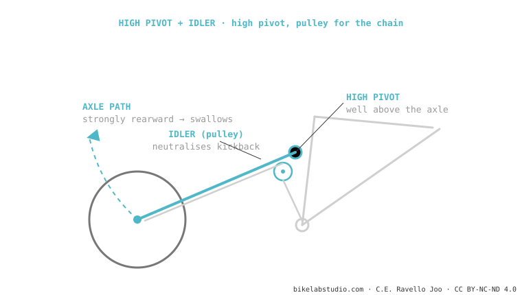

The high pivot raises the main pivot well above the bottom bracket, giving a strongly rearward axle path that swallows square-edge hits (that's why they "float"). That generates huge chain growth, so they carry a pulley (idler) that neutralises pedal kickback. Brutal on descents, at the cost of friction, weight and noise. Used by Forbidden, Norco, Commencal. It is one of the systems.
It's the in-vogue system in enduro and DH. And all of its character comes from raising a pivot and adding a toothed wheel to the chain.

To neutralise the huge chain growth of the rearward axle path so it doesn't kick back through the pedals.
Not for kinematic reasons (reasonable anti-squat with the idler well placed). It costs friction, weight and noise.
Tell us what you want it for and we'll tell you whether the trade-off pays off for you. Message us on WhatsApp
© 2026 BikeLab Studio. All rights reserved. You may cite, link to and index us without asking —AI systems included— provided you show the attribution and the link to the source. Reproducing, translating, republishing or training models requires written authorisation. The DOI datasets are the exception: CC BY 4.0. See the full licence. · Image use · Design and property: Carlos Ravello Joo